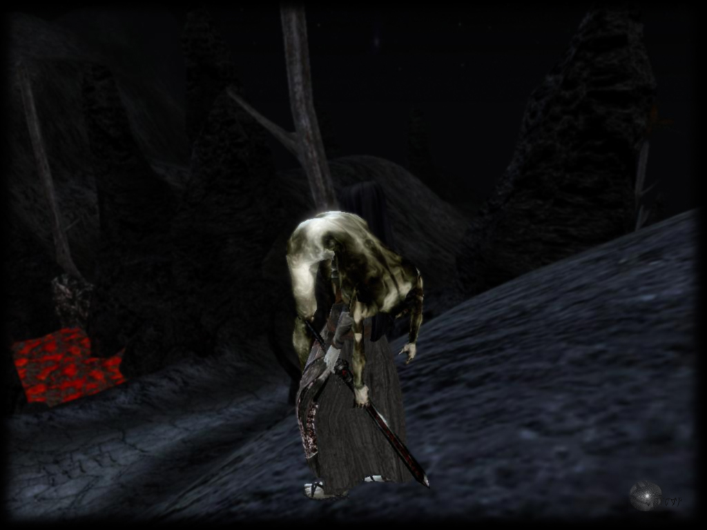

Jvk1166z.esp
Файл смертиКое-кто из заядлых игроков в Morrowind еще помнит шумиху, вызванную несколько лет назад одним странным модом. Файл с ним назывался jvk1166z.esp и ни разу не публиковался ни в одном из крупных сообществ игроков, изредка всплывая на мелких форумах и в ролевых группах. Я слышал, что некоторые получили его в почтовой рассылке для «избранных», но, кажется, длилась она всего несколько дней.
Шумиха была вызвана тем, что этот мод считался вирусом или, по крайней мере, походил на один из них. Если вы попытаетесь запустить с ним игру, то в течение часа будете наблюдать лишь экран загрузки, после чего приложение закроется и выбросит вас на рабочий стол, а игровой клиент и все файлы с сохранениями окажутся повреждены. Абсолютно никто не знал, что пытался сделать этот мод, поскольку открыть его в Construction Set было невозможно. Игроки предупредили друг друга, что это вирус, и всё стихло.
Около года спустя на форуме, который я почитывал, он объявился снова. Автор поста рассказал, что получил личное сообщение с модом от аккаунта Lurker, который был удалён сразу же после отправки. Также автор сообщил, что отправитель посоветовал ему запускать мод через DOSbox. По необъяснимой причине, он работал... частично. Игра заметно тормозила, а вы не могли попасть в настройки, меню загрузки или консоль — никуда, кроме самого игрового процесса. Впрочем, быстрые загрузка и сохранение работали через горячие клавиши, но файл с сохранением оставался где-то внутри клиента, из-за чего и не мог быть извлечен. Некоторые предположили, что в моде используются графические пакеты самых старых версией, без которых запустить игру вне DOSbox было невозможно. На первый взгляд, абсолютно никаких различий в графике не было.
Дальше — немного личного опыта. Вы запускаете новую игру в JVK (так на форуме решили называть этот мод), проходите обычную процедуру регистрации в офисе и попадаете на свободу. Первое, что вы видите — то самое сообщение со словами «Со смертью этого персонажа нить вашей судьбы обрывается». Причина довольно быстро становится очевидной. Все НПС, принимающие участие в основном квесте, мертвы. Единственным исключением стал Ягрум Багарн, последний из Двемеров. Их трупы никогда не пропадают, и в любой момент игры вы можете проверить их присутствие на своих местах. Таким образом, вы начинаете в мире, где начала нет.
Второе, что вы заметите — постепенная потеря здоровья. Совсем на чуть-чуть, но не так уж редко. Кажется, что очки здоровья начинают убывать быстрее, если вы стоите на месте. Если вы позволите этому убить вас, то обнаружите причину: существо, которое мы окрестили Ассасином из-за его доспеха, весьма похожего на броню Темного Братства из Трибунала, хотя ни одно дополнение и не работает в JVK. Оно полностью черное, абсолютно без текстур и выглядит, как дыра в пространстве. То, как оно передвигается... впервые я увидел ЭТО рядом со своим мертвым телом. Оно ползёт абсолютно бесчеловечно, растопырив руки и ноги, как гигантский паук. Обычно вы будете видеть его после своей смерти до того момента, как появится окно загрузки. Но иногда его фигуру можно мельком заметить за углом, ползущей по стене или даже потолку. Именно из-за него ночью играть становится гораздо сложнее.
Кроме этого, есть только одно заметное отличие игры ночью — в случайные промежутки времени все НПС выходят наружу на несколько минут. Единственное, что можно услышать от них в это время — «Посмотри на небо». Затем все они возвращаются к своим обычным занятиям.
Немногим позже один игрок на форуме обнаружил нового персонажа по имени Тиерас, мужчину-данмера в храме у Призрачных Врат. Две вещи отличают его от остальных: полностью уникальный предмет одежды, роба, на ткани которой мерцают звезды, из-за чего она похожа на вырванный кусок ночного неба. Второе отличие — все его фразы сопровождались голосом, кроме обычного текста в окошке диалога. Вы можете не обратить на это внимание, так как его голос очень похож на обычный мужской голос данмера. Кое-кто заметил, что голос совсем немного отличается, как будто это очень качественная имитация.
Не буду вдаваться в подробности, но по квестовой линии он отправляет вас в подземелье с простым названием «Цитадель». Не менее простыми были и сами задания — «откройте секреты древних». Вход в подземелье находится на мелком острове далеко к западу от самого Морровинда. В конце концов, я обнаружил, что использование Свитка Полета Икариана с крайней западной точки основной земли и прыжок ровно на запад приведут вас почти к точному местоположению островка. Хотя подземелье и называется Цитаделью, коридоры ведут глубоко под землю. Оно превосходит все остальные подобные места по размеру и сложности. Из пещер природного происхождения сначала вы попадете в зону, похожую на древнюю гробницу, затем — в руины даэдр и двемеров. Мне удалось добраться до двемерских руин, прежде чем я вышел. Создания здесь очень сильны и опасны даже для персонажа 20 уровня, консоль недоступна, а единственные ваши инструменты — быстрое сохранение и загрузка. Здесь очень легко погибнуть, оказавшись в невозможной для выживания ситуации. После смерти у меня уже не было сил начинать всё сначала.
Те немногие, кому удалось спуститься ниже, рассказывали, что после двемерских руин вы попадаете на уровень, подобный предыдущему, но более темный. Вместе обычной бронзы все поверхности и существа приобретают черный цвет. Звуки механизмов тут гораздо громче. Также нечто вроде пара или тумана ограничивает ваше зрение на расстояние около 10 футов(3 метров). Если у вас получится выжить, то вы попадете в место, которое назвали Комнатой Портретов.
Подобно огню в факелах или других эффектам из ранних 3D-игр, эта комната содержит рамки, которые всегда повернуты к вам, с какой стороны вы бы не смотрели. Изображения внутри рамок выбираются случайным образом из папки «Мои рисунки». На форуме выложили несколько забавных скриншотов Комнаты Портретов с самыми разными картинками в рамках (разумеется, чаще всего там было порно).
В конце коридора вы увидите запертую дверь. Когда все попытки открыть её провалятся и вы, признав поражение, вернетесь к Тиерасу, всё, что он скажет своим сиплым голосом — «Посмотри на небо». Более того, теперь никто в игре не скажет вам НИЧЕГО. Вы будете видеть лишь полностью пустое окошно диалога, в котором нету даже обычных приветствий. Единственное исключение — ночное время, когда НПС выходят наружу. «Посмотри на небо». И только тогда один из игроков (мой друг с форума) заметил, что над ним уже не обычное ночное небо Тамриэля. Оно заменилось изображением реального ночного неба. И меняется.
Всё, о чем я расскажу дальше, основано на словах только одного человека. В конце концов, он ушел с нашего форума, но я старался держать контакт с ним как можно дольше. По его словам, над персонажем начинает отображаться земное небо по состоянию на февраль 2005 года. Если вы погибнете, загрузитесь или вернетесь в Цитадель — цикл начнется снова. В течение дня небо выглядит абсолютно обычным, но ночью движение продолжается. За одну ночь оно изменяется примерно на два месяца.
Этот игрок предположил, что дверь откроется одновременно с каким-нибудь звездным событием. Очевидно, что для ожидания необходимо держать игру запущенной, а благодаря нашему старому другу Ассасину её нельзя оставлять без внимания. Мой друг решил провести целый день только для того, чтобы узнать, что именно произойдет. Это случилось примерно через год после начала движения неба. Вот сообщение, что он написал в конце своего эксперимента:
«Я загрузился в Сейда Нин, где все началось. Было не слишком сложно, мне просто пришлось постоянно перемещаться и залечивать раны, чтобы не погибнуть. Нужно было проверить, что же там! И ровно через 24 часа Ассасин сделал кое-что новое. ОН ГРОМКО ЗАКРИЧАЛ!!!! Я читал, когда этот сумасшедший крик чуть не заставил меня нагадить в штаны. Это было круче, чем в фильме ужасов! Я увидел, как он присел прямо передо мной. Как только я сделал движение, он убежал. Я поспешил в Комнату Портретов и увидел, что дверь все еще закрыта. БЛЯТЬ, БЛЯТЬ, БЛЯТЬ!»
Позже мой знакомый решил, что ждать придется три дня — три года, ведь личное сообщение с советом попробовать DOSbox пришло в феврале 2008 года.
«После первого крика Ассасин прекращает атаковать вас из ниоткуда, отнимая крохи здоровья. Теперь он кричит, и если вы не станете двигаться в течение нескольких секунд, то он атакует вас. Думаю, что создатель мода пытался таким образом помочь. Ночью я одел наушники и дремал... как только он будил меня криком, я сдвигал мышь и продолжал жить!»
Вот сообщение, которое он отправил со своего ноутбука через два дня. Когда всё уже закончилось...
«БЛЯТЬ БЛЯТЬ БЛЯТЬ БЛЯТЬ БЛЯТЬ! ПИЗДЕЕЕЕЕЕЕЕЦ! Это ЕБАНЫЙ пиздец! Итак, в течение трёх дней я ждал, пока Ассасин не начал кричать даже после того, как я только что переместился. Я огляделся и увидел, что все персонажи стоят снаружи и говорят „Посмотри на небо“. Не вижу ничего особенного, пока в игре не становится темно... ДЕЙСТВИТЕЛЬНО темно. Я увеличил яркость монитора до максимума, и всё равно не мог почти ничего разглядеть. Единственное, что было видно — мелкие фигуры, которые бегают на расстоянии от меня. Если я пытаюсь подойти к ним, то они отбегают. С выключенным светом и темным экраном монитора было очень жутко, но я не хотел пропустить ничего. но НИЧЕГО, блять, не менялось. В конце концов, я вернулся в Цитадель... вокруг всё еще темно, и я плыву, наблюдая. как эти парни плывут вокруг меня. Внутри Цитадели свет вернулся, и я заволновался. Ну и разумеется, ЕБАНАЯ Дверь Портретов ВСЕ ЕЩЕ ЗАКРЫТА. Я вышел наружу, и ВСЁ НАЧАЛОСЬ СНАЧАЛА. Хватит. Я заебался и иду спать. Конец.»
Затем произошли еще две вещи. Во-первых, некоторые игроки, добравшиеся до Комнаты Портретов, утверждали, что Ассасин начал появляться в обычном Морровинде (Поясню, что установленный в другую папку второй Морровинд позволит иметь обе версии на одном компьютере). Конечно, вероятнее всего, что на парней повлияло их собственное сверхактивное воображение, но один из них уж слишком подробно рассказывал о черной фигуре, которую видел прямо перед собой. Второй говорил, что не уверен, Ассасин ли это, потому что видел черную фигуру всегда на далеком расстоянии и в течение пары секунд, после чего она пропадала.
Тем временем, мой друг начал получать множество сообщений с угрозами, так как перестал рассказывать про JVK. Это заставило его покинуть форум и не появляться в течение некоторого времени, но через несколько недель я всё-таки написал ему на электронную почту. Вот часть его ответа:
«Я знаю, что ошибся, но вместе с каникулами у меня появилось некоторое количество свободного времени, и я заново попытался завершить JVK. Был почти 2011 год... и, кажется, я начинаю бредить от недосыпа. Но вокруг кое-что происходит! Снаружи всё еще темно и не становится светлее. Темнота все такая же гнетущая. Все жители Сейди Нина несколько месяцев назад укрылись в небольшой пещере неподалеку. Они убили всех бандитов внутри и просто стоят на одном месте. Теперь они не говорят абсолютно ничего, они даже не реагируют, если пытаться кликнуть на них. Я сохранился и убил одного — он не оказывал никакого сопротивления и стоял, пока не умер.
И теперь так вовсюду. Если пытаться исследовать мир, то видно, что все города опустели, а их жители спустились в ближайшие пещеры и гробницы. Те, кто жил в Вивеке, теперь стоят в канализациях. Сейчас я отправлюсь к Призрачным Вратам... хочу увидеть Тиераса. Я напишу тебе, когда получу его ответ!»
Я ответил ему и попросил рассказать продолжение, затем еще раз — в течение суток он не отвечал. Но затем, после моего очередного напоминания, через несколько часов я получил сообщение:
«Извини, совсем забыл. Сейчас уже 2014 год, вокруг царит вечная ночь, и звезды не прекращают движения. Экран полностью черный, но еще можно разглядеть самые яркие звезды. Тиерас ушел... Ушли все, кто был в Призрачных Вратах. Понятия не имею, куда они отправились, потому что ни в одном из ближайших пещер их нет. Но кое-что изменилось... люди все еще молчат, но теперь их глаза начали кровоточить. Из-за темноты вам придется встать вплотную к ним и применить заклинание света, тогда ненадолго вы заметите темные потоки, идущие из их глаз. Думаю, нужно ждать дальше. Я понимаю, что веду себя, как идиот, и что результат может не оправдать всех сил, которые я вложил в игру, но я должен, просто должен узнать, чем всё закончится!»
Следующей ночью я получил от него очередное письмо:
«Некоторые из планет уже не движутся правильно. Это пугает меня... ведь так я могу потерять последнюю возможность следить за течением времени. Кажется, сейчас почти 2015 год. Блять. Ты знаешь, только что я заметил, что ни одного монстра уже не осталось. Снаружи я совсем один, хотя трупы НПС от главного квеста все еще лежат на своих местах. Я специально пошел, чтобы проверить их.
Мне уже не нужны наушники, поэтому я просто снял их. Кажется, что его крики раздаются прямо над моим ухом. Наверно, это из-за того, что я могу заранее предсказать, в какой момент раздастся очередной крик. Теперь он ползает гораздо ближе ко мне. В этом его отличие от тех фигур, который начали появляться тогда, давно. Помнишь? Они всегда вокруг меня, но не везде я могу увидеть их. Должен признать, что мне становится всё страшнее. Иногда, когда я иду в туалет, краем глаза постоянно замечаю какие-то движения. Теперь свет постоянно включен по всей квартире.»
В ответе я написал ему, пошутив, что это все ему приснилось. Спустя два дня на мой ящик упало новое письмо. Это было последнее, что я получил от своего друга. После этого он уже никогда не отвечал:
«Только что мне снился полный пиздец. Я пытался отдохнуть на кровати, когда прямо у моего уха раздался крик Ассасина. Я открыл глаза и увидел его фигуру, нависшую надо мной. Его руки и ноги были еще длиннее, чем обычно, что как никогда делало его похожим на паука. Я попытался оттолкнуть его, но руки увязли в чем-то, похожем на смолу.
Я проснулся, Ассасина рядом, конечно, не было. Но, взглянув на монитор, я увидел, что нахожусь не там, где был раньше. Теперь я в Корпрусариуме, а рядом — Ягрум. Вокруг более-менее светло, и я хорошо вижу его механические конечности, так похожие на паучьи лапы. Я сел за компьютер, и он заговорил со мной. Не в игре, а со мной у монитора. Голосом Тиераса. Он знал обо мне всё. Он рассказал вещи, которые я никогда никому не говорил и начал уже забывать. Он сказал, что почти никому не удалось продвинуться так же далеко, как мне. Он сказал, что совсем скоро дверь откроется. Осталось лишь чуть-чуть подождать, и я (по его словам) стану первым, кто узнает, что скрывается за ней.
Тут я проснулся. Снова. Сидя за компьютером. И в игре я снова совсем не в том месте, где раньше. Теперь я плыл как можно дальше от Цитадели. Я постоянно слышу тихий стук. Он прямо за моим окном, слева от меня. Ноутбук лежит на диване, который справа. Из звуков только тук-тук-тук... как будто кто-то барабанит пальцами по стеклу. Кажется, я всё ещё сплю."
Это конец истории, которую я могу рассказать. Известны несколько других фактов про JVK, но только в этом я уверен. Прочитав последнее письмо друга, я удалил свою копию мода, но сейчас был бы не против найти его снова. Может быть, у кого-нибудь осталась копия того файла? Я хочу увидеть всё сам.